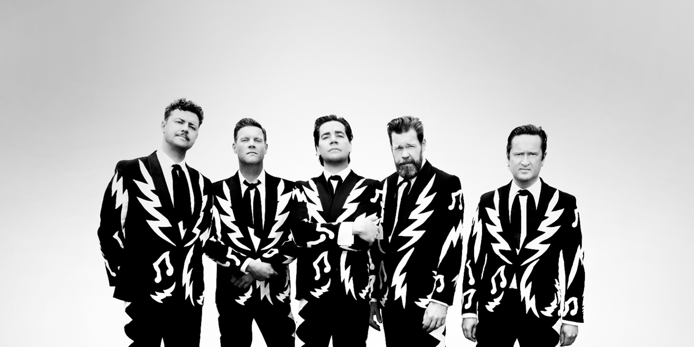
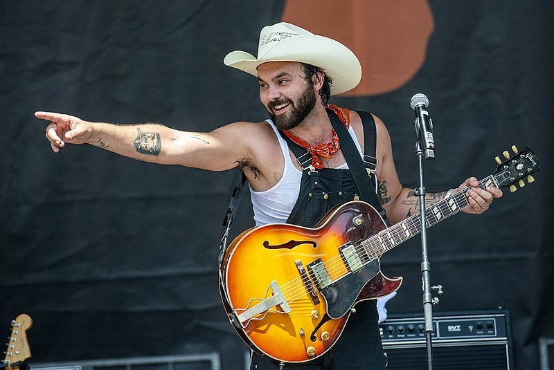
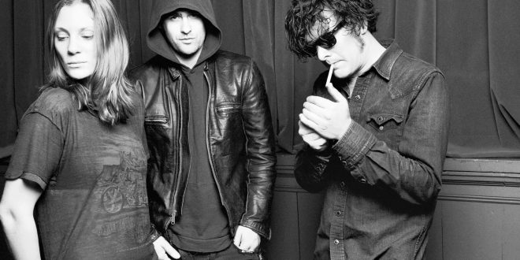
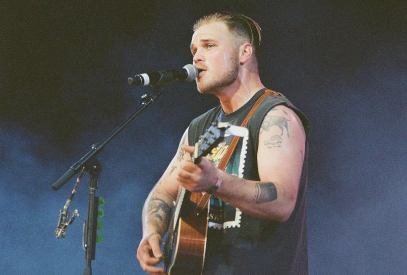
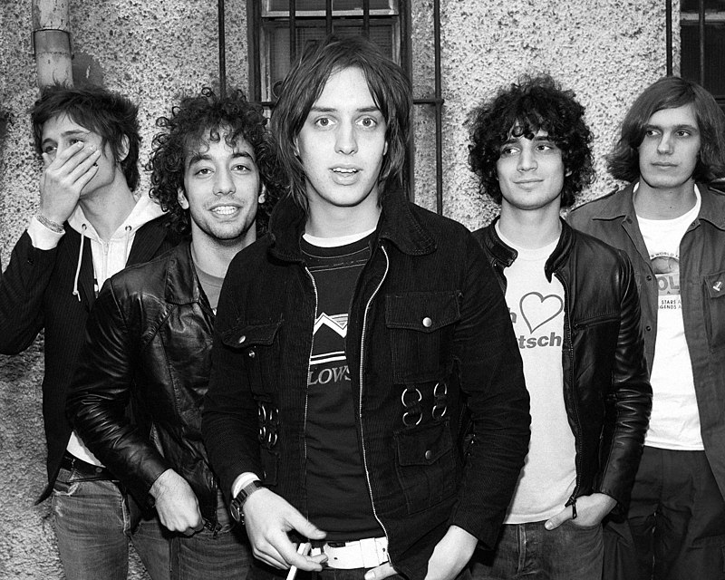

It's my favourite time of year!
Checking out all my friends various Spotify wrapped posts has introduced me to a lot of new music. I love seeing the spectrum of taste from people I care about, and thought it might be fun to center this project around my own list.
Spotify list of my Top 5 arists this year:
- The Hives
- Shakey Graves
- Black Rebel Motorcycle Club
- Zach Bryan
- The Strokes
Hover over images to see the name of the band!
    